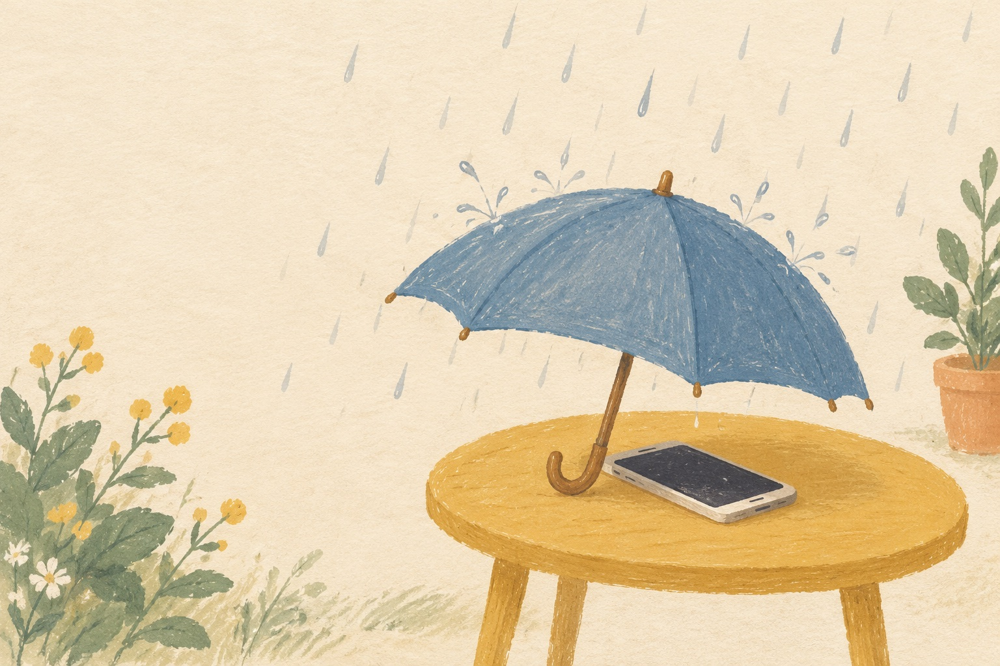
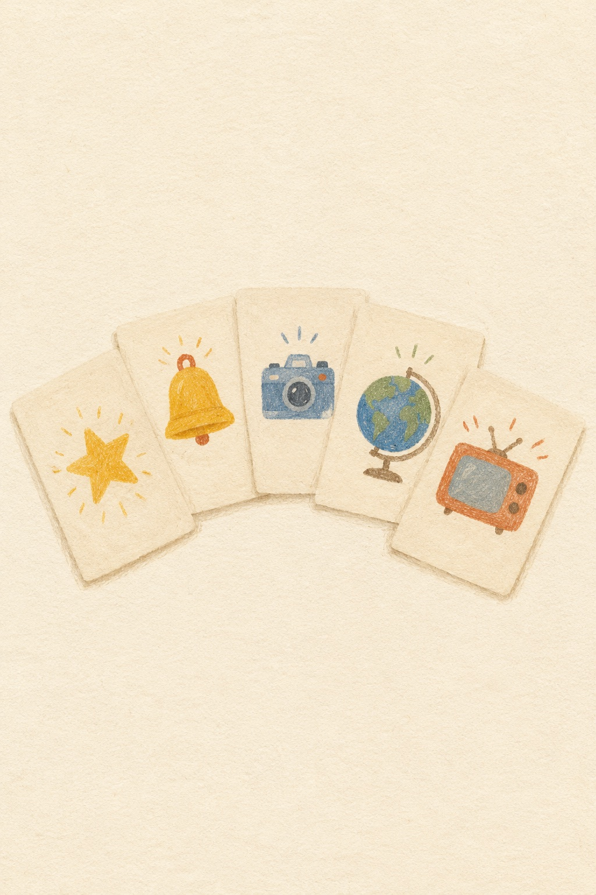

产品展示 · 二〇二六年十月
给女演员做的四件东西
四件都做好了，都能点。现在给她的是后两件。
前两件（雷达、挑信）暂时收起，不在给她看的站点和课件里；代码、案例、插画都在，要开随时开。下面四件都是真产品，点卡片切换。

AI 换脸雷达1 · 暂时收起谁在盗用女演员的脸，先发现、再取证、再下架。每天扫，只记元数据，P0 24 小时交律师。 评论挑信2 · 暂时收起几万条评论里，每天挑出最值得女演员亲自回的几条，草稿起好，女演员点头才发。每天 5 分钟。
桐铃小测试3 · 现在给她的粉丝答 8 道题，得一张「你是哪种桐铃」的卡。题目从超话里来，每周一套，女演员点头才发。 桐铃 vibecoding4 · 现在给她的粉丝一句话，AI 做成能玩的小网页，署粉丝的名。女演员每周点名一个。
桐铃 vibecoding4 · 现在给她的粉丝一句话，AI 做成能玩的小网页，署粉丝的名。女演员每周点名一个。
这里嵌的是带「?all」的站点，四件全开；给她的正式入口是不带 ?all 的，只显示后两件。里面的人数、评论、线索都是演示假数据；接入 AI 钥匙后带「真」字的按钮才真跑。雷达只记链接和标题，不下载任何素材。
红线：不用她的脸和声音；不碰她的工作；不收集粉丝个人信息。